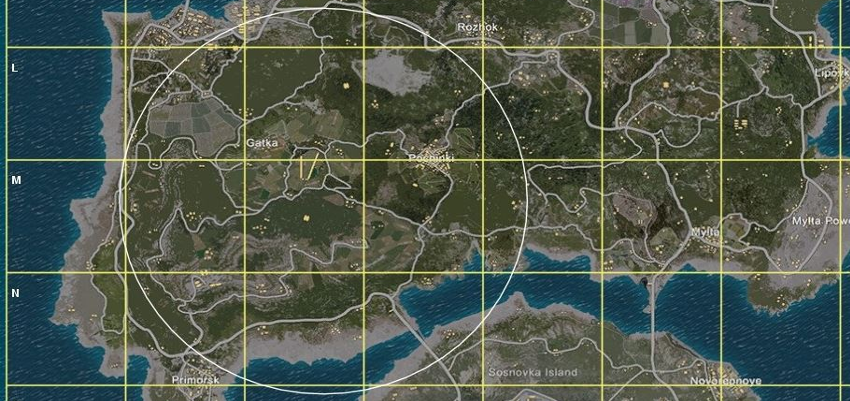

Alexander Pritchard
"Blue Border of Death" Alternative (PlayerUnknown's Battlegrounds)
Problem Idenfitication
As someone who only plays PlayerUnknown's Battlegrounds occassionaly, and I'm sure other less dedicated players can relate, I could not work out how the map-border worked. I asked frequent Players of PlayerUnknown's Battlegrounds how they think the initial placement of the (appropriately named) "Blue Border of Death" is decided. Those responses, in addition to my own research, suggested most Players believe that the location is 'random'. From a Game Dev's perspective, I believed this to be not effective and that I could create a better alternative.
I decided on two possible variations:
- The border's position equals the average position of the Players.
- The border's position equals the average position of the absence of Players.
Both options could be potentionally implemented in different in-game modes. Variation i. would reveal where the majority of Players are concentrated on the map to induce more fights, whereas variation ii. would panic Players as they would need to move quickly into a scarcely populated area of the map in order to stay alive.
However, the border's X and Z coordinates being the average of the combined X and Z coordinates of the total Players makes the most logical sense, and therefore is the varition I chose to implement myself.

Screenshot of the PlayerUnknown's Battlegrounds map taken in-game.
Research and Abstraction
The computational method known as Abstraction played an important part in this project as I planned to create a simulation, rather than an accurate version, of PlayerUnknown's Battlegrounds (which would be a mammoth task and an extremely unrealistic goal - not to mention Copyright laws prohibit it).
I looked at PlayerUnknown's Battlegrounds as a reference-model and determined that the most important features of gameplay (with regards to the alternative border algorithm I wanted to create) were:
- The Players' initial spawning locations.
- The number of players.
- The border's initial spawning location.
- The border radius.
This left out key features of PlayerUnknown's Battlegrounds that weren't necessary or were too complex to implement. For example, the details in the terrain or the gradual decline in the border's radius.

My Solution
I decided to create a basic prototype of the border mechanic. This simulation has three stages: it begins with an empty terrain, then on which 50 'Players' spawn randomly on. I believe this apparent random-spread of 'Players' to be acceptable and the best representation of Players' positions in-game. Then a border spawns on the terrain (its' X and Z coordinates being the average of the combined X and Z coordinates of the total Players).
The Importance of my Solution
It is key in Game Development to allow your Players to be strategic in their decision making e.g. whether to go North or East. Seemingly small and inconsequential decisions such as these are being made repeatedly throughout the round by up to 100 individual Players, and so you cannot leave such a vital feature (in this case, the "Blue Border of Death" in PlayerUnknown's Battlegrounds) down to chance.
Even if my algorithm was implemented, it might benefit from not being revealed to Players in the patch notes. You would then be rewarding Players who think strategically by enabling them to predict the initial placement of the border, and work their gameplay around it, which is simply not possible in it's current state of being 'randomly' placed.
Feedback
I demonstrated my simulation to a small group of indivduals, some of which had played PlayerUnknown's Battlegrounds and some of which hadn't. I am pleased to report that the majority believed this was a better alternative to the game's "Blue Border of Death".
Nevertheless, there are certainly steps I could take to improve my solution to make this simulation more accurate:
1. I should not have relied on 'random' spawning positions for 'Players'. Actual-Players' starting positions aren't random as the actual game-terrain is far more detailed, containing towns and areas that provide better loot (that Players will tend to head towards).
2. I could develop this solution further through adding more stages that represent the border decreasing in size after a few seconds, removing the 'Players' outside the circle and repeat this until all-but-one Player remains (the "Winner Winner Chicken Dinner").
Notes
This smaller project has taught me the importance of Abstraction in deciding which elements are necessary for the adequate function of the solution, and which can be removed to keep it relevant to the specified requirements.
Back to Top ↑
← Back to Main Page